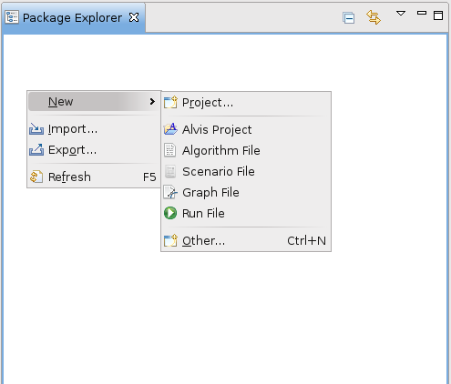
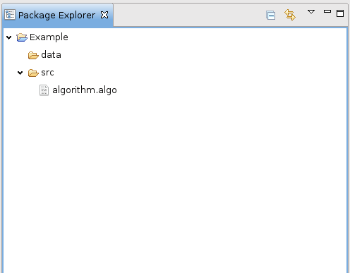
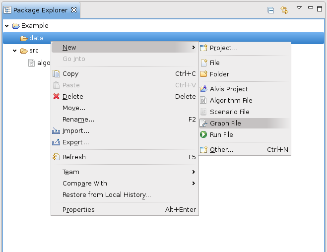
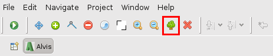
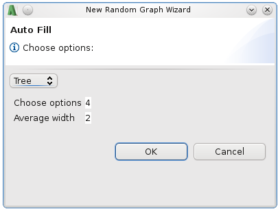
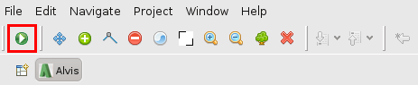
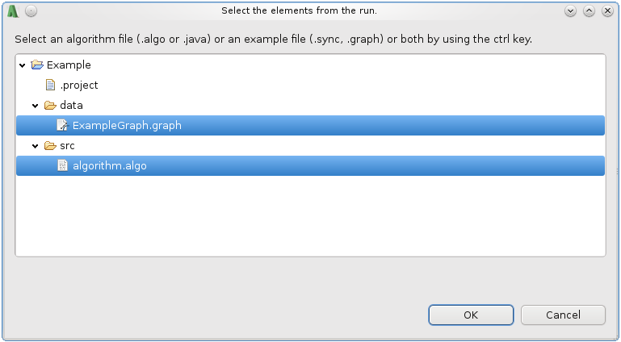

First Steps
The purpose of Alvis is experimenting with everything you hear about algorithms in computer science and deepening your knowledge about it.
In order to do so, you can modify existing algorithms or write new one from scratch.
First of all you have to create a new Alvis Project. Do so by clicking right in Package Explorer -> New -> Alvis Project.

The Alvis Project Wizard appears. Let us call the new project "Example" and click Finish. The folders "src" and "data" are generated automatically in the project folder. "src" contains an empty algorithm file.
We expand the folders "Example" and "src", after this the Package Explorer looks like this:

Now we double click on algorithm.algo. The empty Algorithm Editor opens and we paste this algorithm implementing a breadth first traversal:
main(Graph G, Vertex s) begin
for Vertex v in G.vertices: begin
v.color = "white",
v.distance = infty,
v.parentId = null,
end
s.color = "grey";
s.distance = 0,
Vertex Queue Q,
Q.enqueue(s),
while ! Q.isEmpty(): begin
Vertex u,
u = Q.dequeue(),
for Vertex v in u.adjacents:
if v.color == "white": begin
v.color = "grey";
v.distance = u.distance + 1,
v.parentId = u,
Q.enqueue(v),
end
end
end
As you can see, all the key words are highlighted.
For executing the algorithm do not only need the algorithm itself, in fact we also need an example the algorithm uses. For this we create a random graph.
Click right in the Package Explorer -> New -> Graph File

A Wizard similar to the Project Wizard appears. Let's call it "ExampleGraph" and click Finish. The empty Graph Editor opens.
We do not want to create a graph manually (how to do this is explained in the graph help), but rather generate one randomly. For this purpose we click the little tree symbol.

The New Random Graph Wizard appears.

We leave the values the way they are und continue by clicking "OK". A randomly generated tree shows up in the Graph Editor.
Now we have an algorithm and an example. In order to test the algorithm we click the play symbol in the upper left corner

We approve potential requests wether modified files should be saved. In the following dialog we expand the directories "src" and "data" and select the algorithm and the example graph by clicking them with the control key pressed.

The Run starts after we click "OK". How to control it is explained in The Run.
Clicking the play button  starts the algorithm.
The other two buttons let the already take a step backwards or forwards. By default, Alvis decides randomly, which node is the start node an in what order the nodes are visited. To control this, you have to create a so call
Run File
starts the algorithm.
The other two buttons let the already take a step backwards or forwards. By default, Alvis decides randomly, which node is the start node an in what order the nodes are visited. To control this, you have to create a so call
Run File
Congratulations, you have just taken your first steps with Alvis!